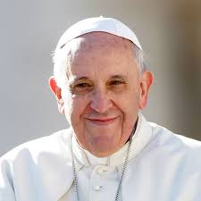

Líderes Religiosos
Papa Cardeais

Francisco I
Cardeais
O anjo do senhor anunciou a Maria e ela concebeu do Espírito Santo - Lucas 1:28
A Igreja Católica, também denominada Igreja Católica Romana ou ainda Igreja Católica Apostólica Romana, é a maior igreja cristã do mundo, que em 2020 tinha aproximadamente 1,36 bilhão de seguidores batizados.Como a maior e mais antiga instituição internacional do mundo em funcionamento contínuo, ela desempenhou um papel proeminente na história e no desenvolvimento da civilização ocidental.A Igreja é chefiada pelo bispo de Roma, conhecido como Papa. Sua administração central é a Santa Sé. As crenças cristãs do catolicismo são baseadas no Credo Niceno. A Igreja Católica ensina que é a Igreja única, santa, católica e apostólica fundada por Jesus Cristo em sua Grande Comissão,que seus bispos são os sucessores dos apóstolos de Cristo e que o papa é o sucessor de São Pedro, a quem o primado foi conferido por Jesus. Além de sua importância numérica e histórica, a Igreja Católica desempenhou um papel significativo em áreas como a filosofia, a arte, a educação e a caridade ao longo dos séculos. Suas contribuições para a cultura ocidental são inegáveis. No campo da filosofia, pensadores como Santo Agostinho e São Tomás de Aquino moldaram o pensamento ocidental com suas obras. A teologia católica influenciou profundamente o desenvolvimento da filosofia moral e política, fornecendo uma base ética para a sociedade. Na arte, a Igreja Católica foi uma grande patrona das artes, especialmente durante o Renascimento, quando artistas como Michelangelo, Leonardo da Vinci e Rafael produziram algumas das obras mais famosas da história da arte sob o patrocínio papal e eclesiástico. A educação também foi um campo em que a Igreja desempenhou um papel central. Durante a Idade Média, as escolas monásticas e as universidades eclesiásticas foram fundamentais para a preservação e transmissão do conhecimento, enquanto hoje a Igreja mantém milhares de escolas e universidades em todo o mundo. Além disso, a Igreja Católica é conhecida por seu compromisso com a caridade e a assistência aos necessitados. Desde os primórdios do cristianismo, a prática da caridade tem sido uma parte central da vida da Igreja, através de instituições como hospitais, orfanatos, asilos e programas de ajuda humanitária. Em termos de influência política e social, a Igreja Católica desempenhou papéis variados ao longo da história, desde o estabelecimento de estados cristãos na Europa medieval até sua atuação em questões contemporâneas como a defesa dos direitos humanos e a promoção da paz mundial. Apesar de enfrentar desafios e críticas ao longo dos anos, a Igreja Católica continua sendo uma das instituições mais poderosas e influentes do mundo, exercendo sua autoridade espiritual, moral e cultural em uma ampla gama de áreas.
Francisco I
Cardeais


Dom José Antônio
Dom Gregório Paixão